High/Low Manager¶
Organises a bake asset into high/low collection pairs, keeps the copies that ship separate from the meshes you bake, and exports both.
It lives in the 3D viewport sidebar (N) under the R.O.B Tools tab. Pick HL in the suite switcher at the top.
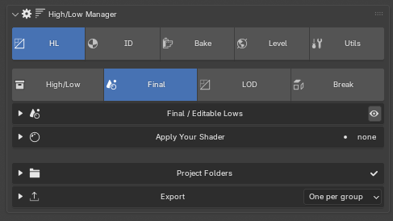
How the panel is laid out¶
Four tabs, and one block pinned underneath them.
| Tab | What it holds |
|---|---|
| High/Low | The bake meshes: assets, groups, exploded view, bake materials |
| Final | The editable copies that ship, and their engine settings |
| LOD | Level-of-detail ladders built from the Final copies |
| Shards | Destructibles — the pieces a Final mesh breaks into |
Project Folders and Export sit below the tabs rather than inside one, because every tab writes through them.
The tab decides what the panel shows. The eye on a section header decides what the viewport shows.
Where did my mesh go?¶
Opening Final, LOD or Shards hands the viewport to that panel: its meshes go on screen and the high/low bake collections are hidden.
That is deliberate. The Game copy, the LOD levels and the shards all sit in the same place in space as the bake meshes, so a mix of them on screen tells you nothing about which one you are actually working on — and it is the reason you cannot accidentally edit a bake mesh while you think you are editing the copy that ships.
Nothing has been deleted, and nothing about your own visibility choices has been changed. The focus is composed on top of your asset eyes rather than written into them, so whatever you had hidden or soloed is still hidden or soloed when you come back to the High/Low tab.
To get everything back on screen at once, use Show Everything. Opening the High/Low section again also releases the viewport.
The eye on any section header does this on demand — Show Only This Panel's Meshes — for when you want the LOD levels on screen while reading a different section.
Two extras worth knowing: focusing Shards also switches every asset to Broken, and focusing Final switches them to Whole, so you are not shown the state the panel is not about. The switch still works normally once you are in there.
If you would rather control visibility only with the buttons, turn off Panel decides what is on screen in the add-on preferences.
The outliner folders¶
The outliner is split the same way as the tabs. The bake assets go in a High/Low folder, the Game copies in Final, the LOD sets in LOD and the shards in Shards. New collections go straight into their folder, and older files are tidied when opened. A collection you placed somewhere yourself is left alone. Turn off File collections into … folders in the add-on preferences to keep everything loose at the top.
Concepts¶
Asset — a parent collection holding a high/low pair:
ROB
├── ROB_high
└── ROB_low
Any collection with children ending _high and _low is picked up, so
structures you built by hand appear too.
Group — an extra high/low pair inside the asset, for a part that needs its own bake:
ROB
├── ROB_high ← the unnamed pair, shown as "main"
├── ROB_low
├── ROB_Head_high ← group "Head"
└── ROB_Head_low
Cluster — groups are filed under their first word. Body Elements,
Body Oven and Body OvenDoor collapse under one Body row with its own
eye and solo. This is how an asset with thirty groups stays readable. A group
whose name is a single word (Head) draws as a flat row instead.
Not Baked — containers inside the asset that the Baker ignores: lights, guide empties, mirror points, Boolean donors, Data Transfer shells.
High/Low tab¶
New Asset¶
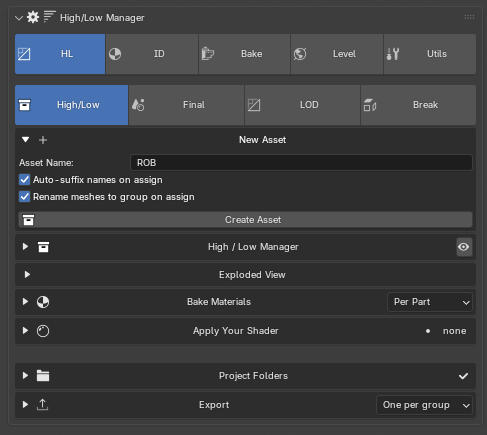
Closed, the header carries the whole job: type a name, press the collection button. Create greys out on an empty name rather than making an asset called "asset".
Open it for Auto Suffix and Rename meshes to group.
While the project has no export root, a prompt appears here with Use .blend Folders and a path field. It is shown until the project has a root and never again — a project used to begin with every path blank and nothing saying so until the first export failed.
The asset list¶
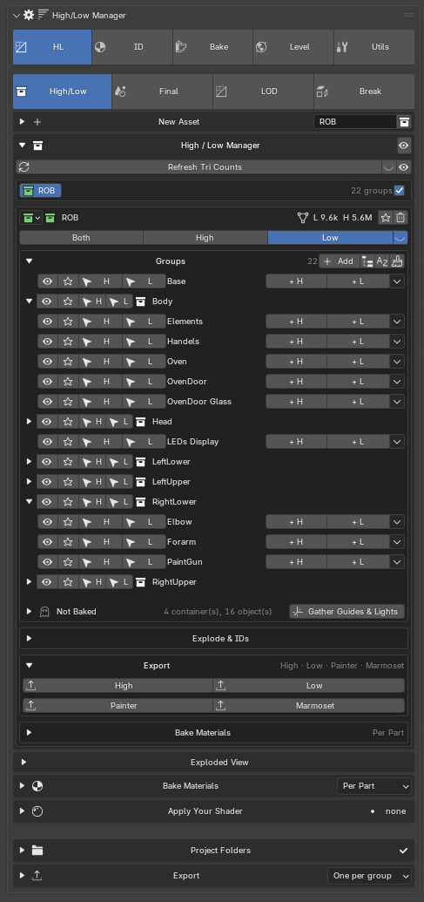
Above the list: Refresh Tri Counts, then hide-all and show-all.
Asset header row — expand arrow, eye, solo, the export checkbox, the collection colour, the name, the tri summary, and delete on the far right. The tri summary is a button: press it to recount just that asset. Delete sits well away from the eye on purpose.
An asset that is hidden or unchecked collapses to its header line.
Visibility row — Both / High / Low, the live one depressed. With the Baker installed and the asset caged, a cage button joins them.
Groups box — Add Group, then organise, normalise names, and clean up empties. Each group row carries visibility, solo, its name, and rename/delete. Cluster headers collapse their parts.
Not Baked sits at the bottom of the groups box, under its own rule, so it can never read as a bake group.
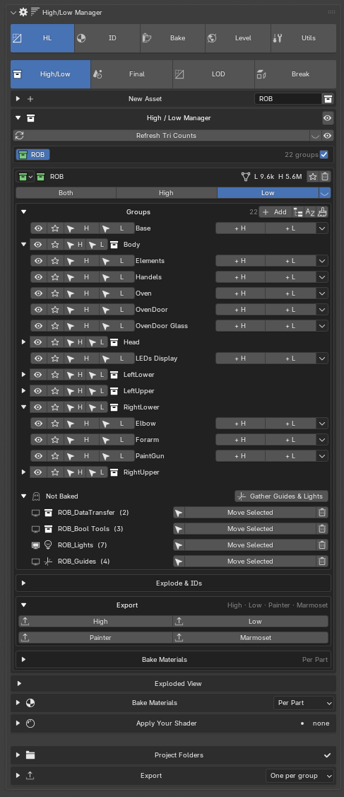
Gather Guides & Lights sweeps the asset's lights and empties into containers. Each container row has an eye, select, move-selected and delete.
Explode — a toggle: blue while exploded, press again to put everything back. See Exploded View below.
Export row — High, Low, Painter, Marmoset for this asset
alone. High exports without tangents, Low with them, Marmoset writes a
per-group FBX set plus <asset>_bake.json.
Stamp IDs on Selected appears when the Material ID Setter is installed. A
Marmoset bake set carries its ID colours across in a MatID vertex-colour
attribute, because that is what survives FBX; Toolbag then bakes a Vertex
Color map and its Color Selection masks read it. Nothing selected means all.
Bake Materials row — the texture-set mode and Bake Materials for this asset, with an X to clear.
Exploded View¶
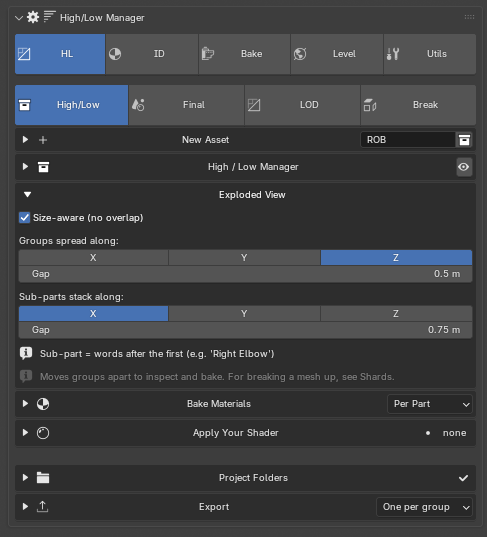
Moves groups apart along an axis so each can be seen and baked on its own. The meshes are not modified, and pressing Explode again puts them back.
Groups spread along one axis; sub-parts stack along another. A sub-part is
the words after the first, so Right Elbow stacks under Right.
This is not the Shards tab. Exploded view separates parts; Shards breaks a mesh into pieces.
Bake Materials¶
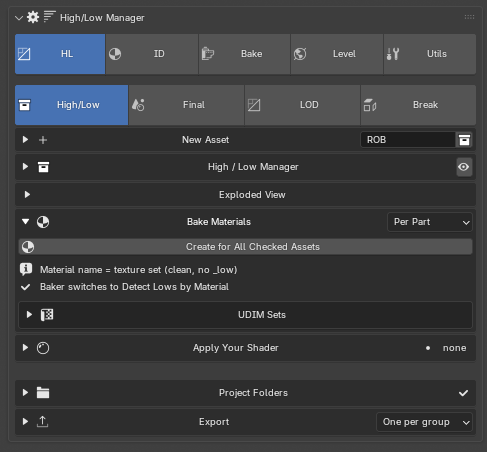
Creates the texture-set materials on the lows. The material name is the
texture set, cleaned of any _low, so it is also the Painter set name and the
baked file name. With the Baker enabled it also switches the Baker to Detect
Lows by Material.
| Mode | One set per |
|---|---|
| Whole Asset | asset — every low, main group and sub-groups alike |
| Per Part | part container under the asset: Body, Head, each limb |
| Shared | everything you tag, under one name you type |
Whole Asset and Shared both need one non-overlapping UV layout across everything in the set. Shared is the atlas, trim sheet or modular kit case — one set spanning separate asset collections — and is the one mode with no asset name to borrow, so it asks for one.
The Baker's side of this is written up under Texture sets.
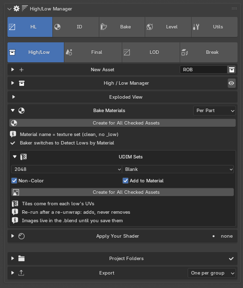
UDIM Sets builds the tiled images: resolution, fill, non-colour and assign.
Apply Your Shader¶
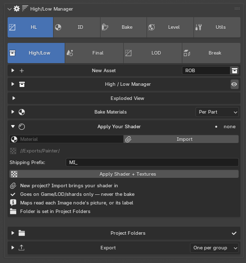
Builds a preview material from baked maps. Pick a template, or Import to bring one in on a new project. Maps are matched by each Image node's picture or its label, and read from the texture folder in Project Folders.
It goes on Game, LOD and shard meshes only — never on the bake meshes.
Final tab¶
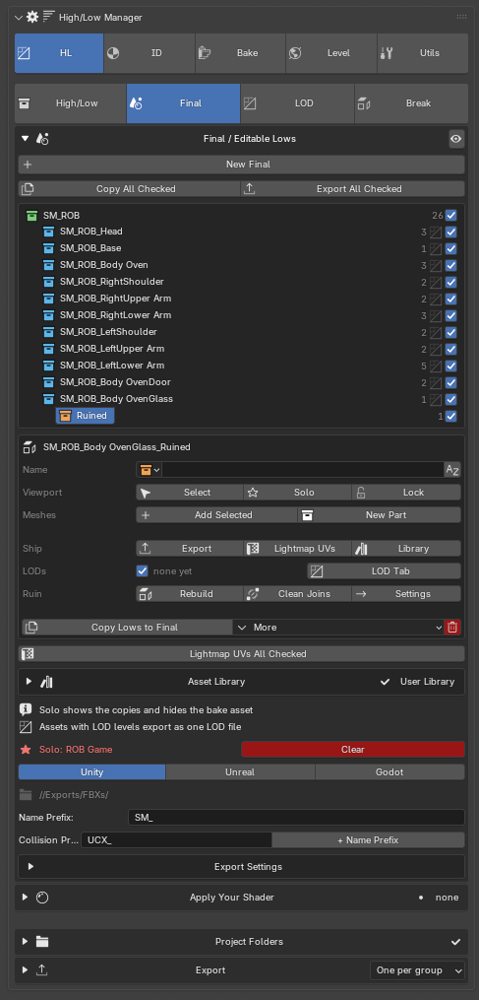
The editable copies that ship. Copy Lows to Game duplicates the asset's
lows into a <asset> Game collection you can edit freely — rename, delete,
make variants — without touching the bake setup. Copies keep their texture-set
materials, and re-running adds only lows that have no copy yet.
Each row carries eye, solo, an optional lock, the mesh count, an LOD marker when levels exist, and the actions menu.
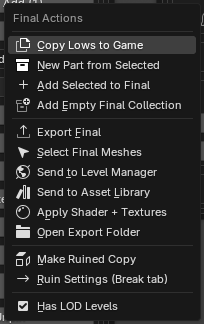
Has LOD Levels filters the asset out of this tab once it is managed in LOD.
Apply Your Shader is here as well as on the High/Low tab, because what it writes to is the Final, LOD and shard meshes. Each asset's ▾ menu has Apply Shader + Textures for that asset alone.
Send to Asset Library¶
Writes a finished asset to its own .blend in one of your asset libraries
(Preferences > File Paths), ready to drag into a level. The thumbnail is
rendered the way Material Preview shows it, with your textures and the same
HDRI.
Pick the Library and an optional Catalog (for example
Props/Furniture). The catalog is also the folder the file goes in, and the
line under them shows that folder. Left empty, they use the Default
Library and Default Catalog set in the add-on's preferences.
Send All Checked to Library sends every
checked asset, and each asset's ▾ menu sends just that one.
- LOD0 is what shows, the same mesh the engine export ships. Without LODs,
the Final meshes show instead. LOD1 and below go in a hidden
<name> LODscollection, and collision meshes in a hidden<name> Collision. - Dropped in, it stands on the 3D cursor.
- Sending again overwrites the file. Your working file is left as it was.
- Texture paths are written absolute. An image that was never saved to disk can't come along, and the report names it.
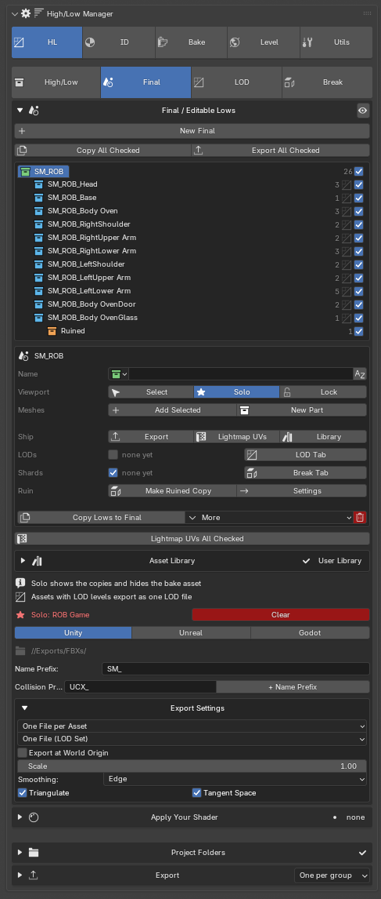
Engine choice (Unity / Unreal / Godot), the name prefix, and the export settings. The folder lives in Project Folders — two fields bound to one setting in two sections is a question with two answers on screen at once.
LOD tab¶
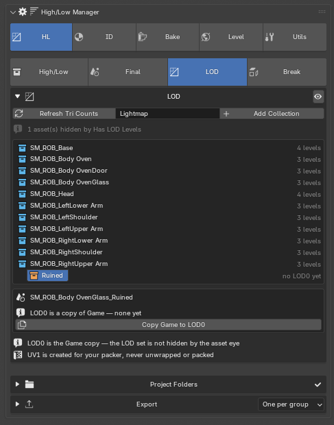
LOD0 is the Game copy itself — the thing that ships and that you carry on editing. So the section is empty until the copies exist and says which step is missing rather than drawing an empty box.
- No Game copies yet → Copy Lows to Game
- Game copies but no LOD0 → Copy Game to LOD0
- A collection that was never baked → Add Collection, then Copy Meshes to LOD0
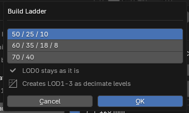
Build Ladder creates LOD1-3 as decimate levels from a preset. LOD0 is left as it is.
The dropdown beside Export for Engine picks how the levels ship:
- One File (LOD Set): every level in one file, which is what Unity's LODGroup and Unreal's LOD import read.
- One File per LOD:
SM_Chair_LOD0.fbx,SM_Chair_LOD1.fbxand so on, one per level. The levels share one origin, so they still line up.
The same choice is in Export Settings and under Final + LODs in Export.
The asset's eye (in Final, and on its row here) hides its Game copy and all of its LOD levels together. A level eye, Solo or isolate opens it again.
Click a level's name (LOD0, LOD1...) to isolate it. Only that level stays in the viewport, and the name lights up while it does. Click it again, or Clear on the solo banner, to put back exactly what was showing before.
Detect LODs picks up LODs you made before the asset was managed. Any mesh
named <name>_LOD<n> (n 1-8) whose <name> matches one of the asset's Game
meshes is moved into <asset> LOD<n> as a hand-made level, renamed to the
suite's pattern, and given a screen size that halves per level (0.5, 0.25,
0.125...). A Game mesh still named _LOD0 loses the suffix. If LOD0 is empty
it is built from Game afterwards. Matching is on the whole name, so
SM_StoolMedium_LOD1 never goes to Stool. The button only shows when
something is found; Detect All LODs at the top does every asset at once.
The UV name field beside Refresh Tri Counts names the lightmap UV; UV1 is created for your packer, never unwrapped or packed. Lightmap UVs also makes UV1 the selected channel, so the UV editor opens on the lightmap. The render channel stays on UV0.
Shards tab¶
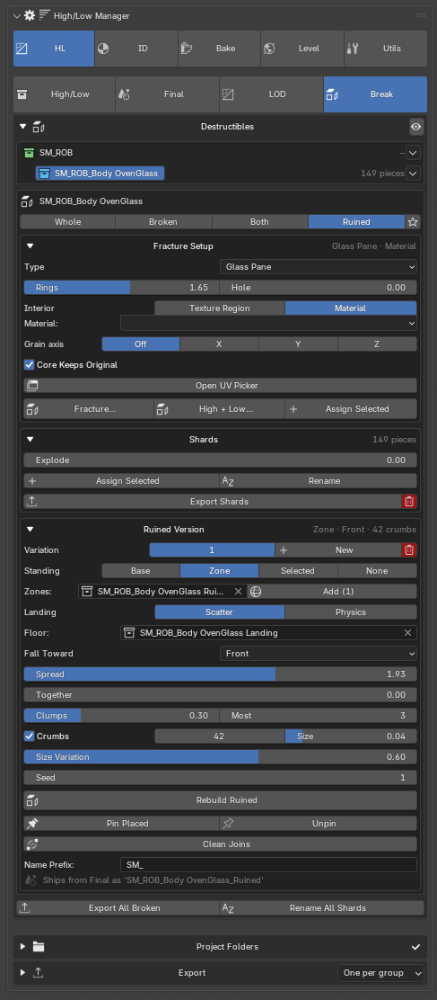
One asset, two states: the whole object and the pieces it breaks into. The pieces reuse the whole object's texture set, so there is no second bake and no second asset — only a second collection and a switch for which you are looking at.
The tab is a list and a card. The list has a line per asset and part - name, piece count and the shard actions. Click a name and its card opens with the Whole / Broken / Both switch and solo at the top - parts have it too: Whole shows the part alone in its asset's Final, Broken takes it off screen so the shards aren't sitting inside it. Below, Fracture Setup shows how it will break, set up before the cut: interior (texture region or material), the Inside, Edges and End Grain regions with a Pick button each, texture grain, grain axis, edge width and Core Keeps Original. Open UV Picker opens the asset's texture in an Image Editor window of its own with the picker panel showing, and Pick starts picking into that slot straight away. Explode spreads the pieces apart to see them - display only, export puts them back together. A solo on shards always shows them, whatever their eye says.
Type sets how the material breaks: Generic, Stone / Rock (chunks of joined cells), Concrete / Masonry (chunks inside, crumbs at the surface), Glass Pane (wavy radial and ring cracks round the hit, with Rings for how many ring cracks and Hole to knock the middle out), Ceramic / Pottery (even shards), Wood Splinters, Snapped Plank (jagged interlocking splintered ends and loose splinters - snapped in the middle, at one end or both), Ice / Crystal (twisting wedge shards), Slate / Layered (flat plates), Blocks, and Impact Hole (debris round the hit, the rest one piece with a hole in it). T in the modal cycles them, B picks where a plank breaks.
Cracked High: the explode menu on a group's row in the High/Low tab lists every type - pick how it breaks and that group's bake high is cracked in the same live modal, the pieces left in place with a groove along every crack (Crack Gap, K), joined into one object or kept as separate objects (P), so the intact low bakes the cracks - or, with L, the low is cracked to match as well (real crack geometry, groove walls on the texture beside them), and Restore puts both back. Materials are kept, shell depth limits how deep the cracks go, and the intact high waits in a never-baked "Uncracked" collection; the arrow button puts it back.
High + Low Shards (the card's High + Low… button): the same cut on the Final copies and the bake highs, so every shard gets a bake pair "Shard NN" whose low half is the shard itself (a linked copy) - rough breaks on the high (H), clean on the low, and the insides on unique, non-overlapping UVs packed into the Inside region so each break bakes its own detail.
Fracture (on the card) breaks the Final copies into pieces, live. Scroll sets the piece count; G moves the seed cloud, S spreads it, X / Y / Z stretch the pieces along that axis, D sets the shell depth (then X / Y / Z for one axis - a column chipped round its sides with its top and bottom whole), N adds noise to the break faces and I sets the impact radius, each set with a click; Ctrl+click adds an impact point, where pieces get smaller, C clears them and R reseeds. Noise is matched on both sides of every crack, so the pieces still fit. While Fracture runs, a controls panel in the lower left of the viewport lists every key with the value it changes, the one being dragged lit up - and it is clickable: click a row instead of pressing its key. A 3D handle on the seed cloud moves (centre, arrows), rotates (rings), stretches (boxes) and spreads it (white circle), and impact points can be dragged over the model, − / + for the piece count, a Stretch number for that axis, Cut or Cancel to finish. With a shell depth only the outer layer breaks into chips and the core stays one whole piece - the chipped column over a solid shaft - and hollow objects cut into rings, never with a lid across the cavity. The seeds and their cells are drawn over the model while you shape them, and nothing is cut until Enter - Esc leaves the file exactly as it was. Every piece comes out closed, keeps the texture-set material outside and gets an Interior material on the cut faces, and is numbered and filed like an assigned shard. The redo panel keeps every value editable, and fracturing again replaces the previous pieces. The inside of the pieces gets a material of its own (optionally one of the Material ID Setter's ID materials) or a texture region of the asset's own texture - no extra material or draw call, UVs at the outside's texel density, turned and offset at random so pieces do not repeat. Pick the region in the Image Editor's R.O.B Tools tab (Fracture Interior) by box, atlas grid tile or UV island; M in the modal switches between the two. For wood and other textures with a direction, give the region a grain (U or V) and Fracture a grain axis (A: the asset's local X, Y or Z): the inside then follows the grain on every piece, and faces cut across it use a separate End Grain region. An Edges region textures a band of cut face along the object's outside (Edge Width, W) - a hollow object's walls are all edge - and with a shell depth the core keeps the object's own texture (Core Keeps Original, O). Without noise, the break edges come out sharp with bevel weight 1 and crease 1 (E) - ready for a weight-limited Bevel modifier and a Subdivision Surface - the shell core's included, and every piece keeps the object's own sharp edges, bevel weights and creases.
Fracture cuts the Final copies, never the bake lows. With the native cutter installed (shipped in the release zips) the cut runs in compiled code - the same pieces, several times faster on heavy meshes; the redo panel's Native Cutter turns it off, and without it the cut runs in Python.
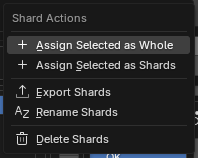
Rename All Shards brings the piece names back in line with the Game mesh. The panel warns when they have drifted, rather than leaving it to be noticed in the engine where nothing groups.
Project Folders¶
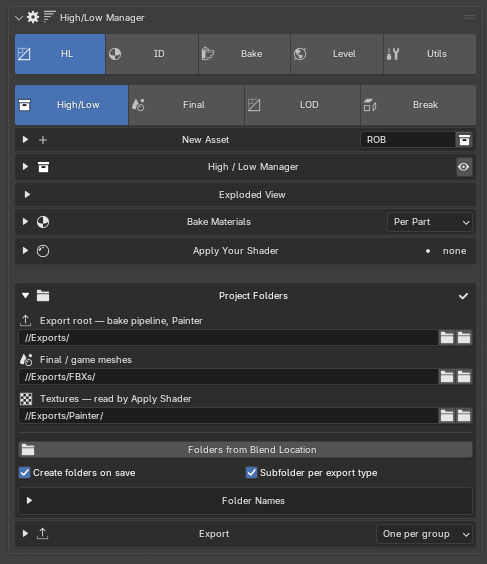
Three roots, set once at the start of a project. The header shows n of 3,
in red at zero, and a tick at three.
| Root | Used by |
|---|---|
| Export root | the bake pipeline and Painter |
| Final / game meshes | Final, LOD and Shards exports |
| Textures | read by Apply Your Shader |
Use .blend Folders fills all three from the current file's location.
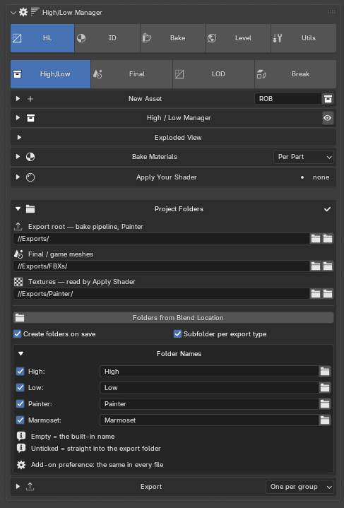
With subfolders on, the four names are editable here — they are an add-on preference, the same in every file.
Export¶
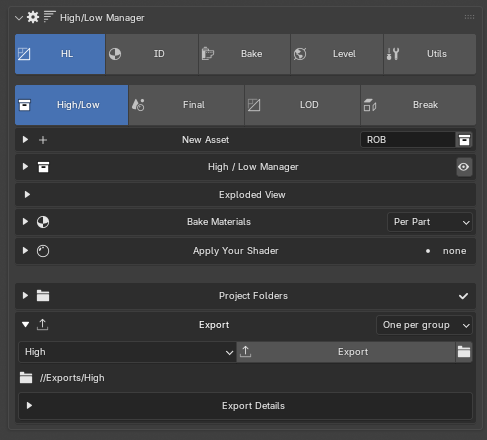
One button and a choice of what it sends. The destination is shown under the button before you press it, because two roots and seven kinds is exactly the arithmetic a person should not be doing in their head.
Anything named "All" exports only checked assets.
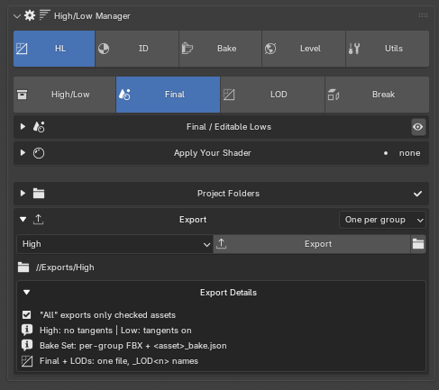
- High: no tangents. Low: tangents on.
- Bake Set: per-group FBX plus
<asset>_bake.json. - Final + LODs: one file,
_LOD<n>names.
Painter exports add their own options: suffix, whether to include exploded meshes, and whether to combine checked assets into one file.
The floating popup¶
The same panel body, away from the sidebar, at a width that lets a real group name sit beside its buttons. It draws whichever tab you are on:
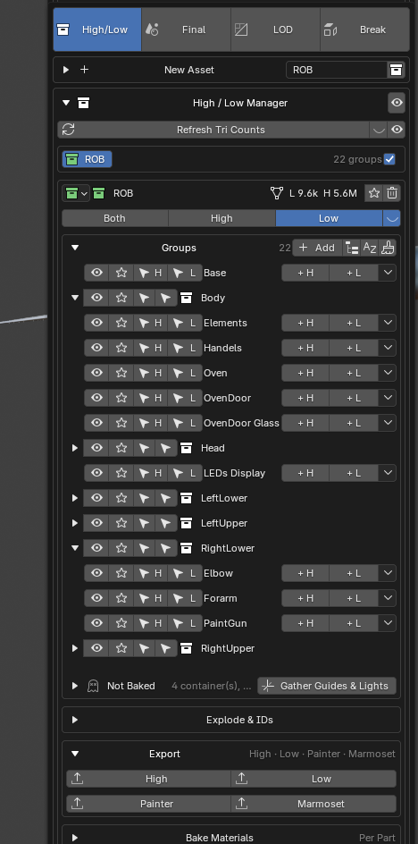 |
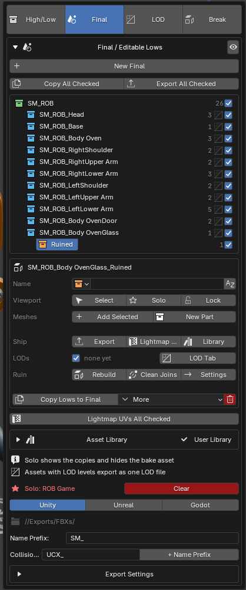 |
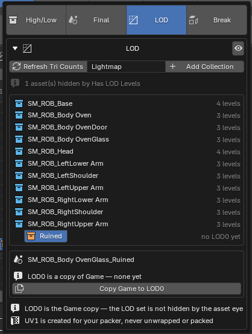 |
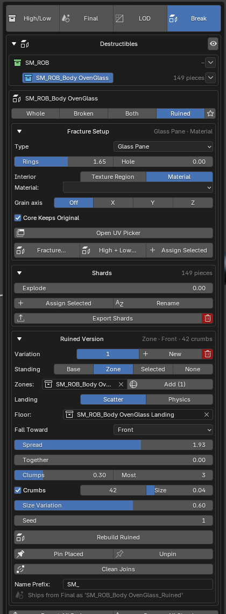 |
A cluster's own popup shows its parts and their visibility without expanding the panel:
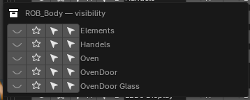
Customise mode puts a checkbox on each section header, choosing what the popup carries. The sidebar always shows everything, so a section can never be lost — only kept out of the popup.
Dialogs¶
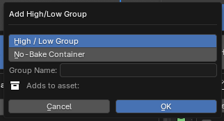 |
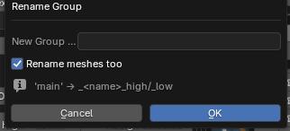 |
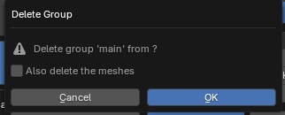 |
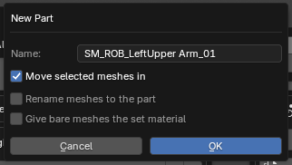 |
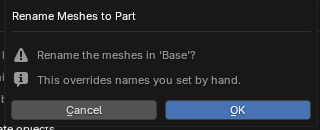 |
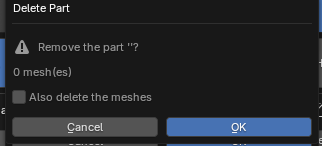 |
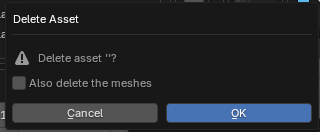 |
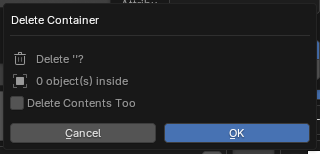 |
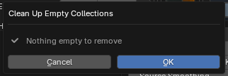 |
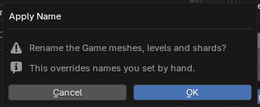 |
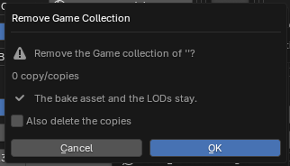 |
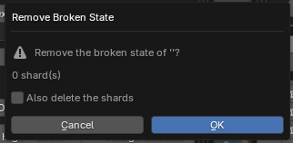 |
If something looks wrong¶
My high/low meshes disappeared when I opened Final. They are hidden on purpose, so the copies that ship are the only thing you can edit while you are in there — see Where did my mesh go? above. Show Everything brings them back.
An asset vanished from Final or LOD. Both tabs filter out assets whose export checkbox is off, and LOD also filters out anything with Has LOD Levels unticked. The LOD tab says how many are hidden that way.
Export says no folder set. The destination line under the Export button names which root is missing. Set it in Project Folders.
Shard names do not match the Game mesh. Press Rename All Shards.
The eyes do not line up. They should — every row reserves the space a cluster triangle would take. If you see two columns of eyes, that is a bug worth reporting.